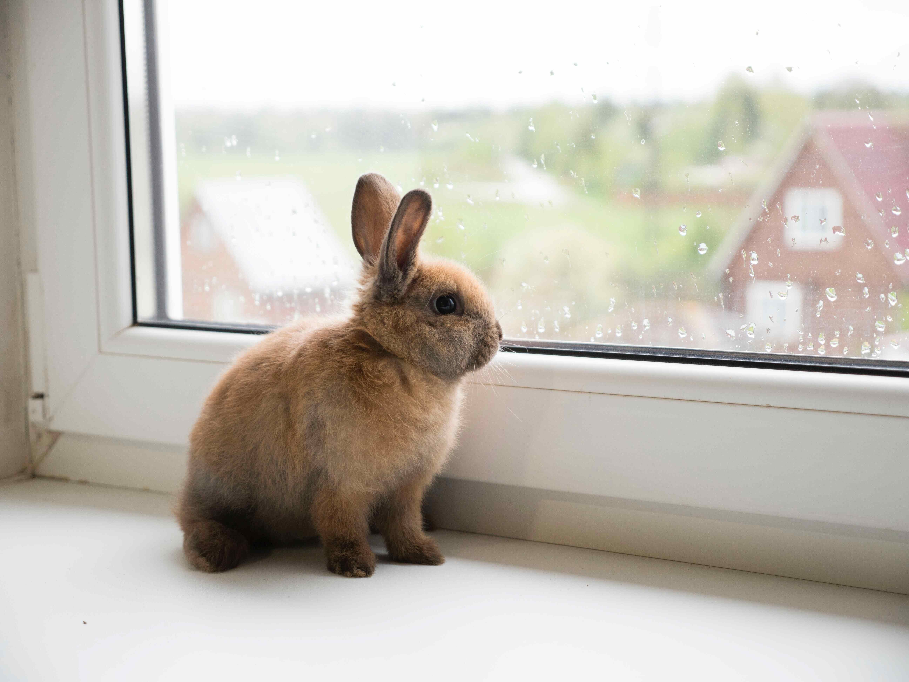

Tito, um pequeno coelho que é mascote da empresa e da família, comumente dito como a sorte de todos que ele gosta, visto que há uma maré de boa sorte em quem ele sobe no colo. O coelho apareceu logo após o Pedro Campos morrer, o avô do dono, Marcos Campos, ele surgiu na Cabana Magia, a original da família, onde tantas histórias foram criadas.
Nosso mascote é dócil e amável, ama crianças e sempre está correndo por aí como um coelho livre. Caso ele possa estar na cabana em que você vá alugar, nós avisaremos e podemos retirar ele de lá se necessário.
